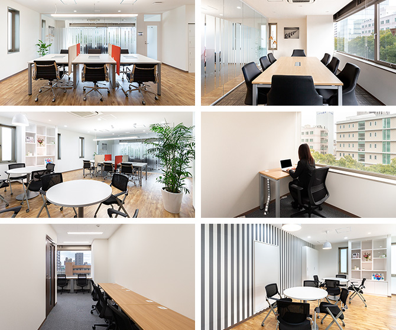

【個室レンタルオフィス】
オープンオフィス高松
- オフィス詳細
- 周辺ガイド
オープンオフィス高松がNEW OPEN
オープンオフィス高松センターは、香川県高松市のメインストリートである高松中央通りに面した高松ビルの2階・3階に位置するレンタルオフィス・コワーキングスペースです。この中央通りを軸に高松市のビジネスエリアが展開されております。オープンオフィス高松センター周辺にも四国新聞社やマンションデベロッパーの本社、関連企業などが集まるロケーションとなっております。
オープンオフィス高松が提供するオフィスサービス
-
 高速インターネット＜光ファイバー＞
高速インターネット＜光ファイバー＞
- 100Mbpsの光ファイバーによるブロードバンド環境をご用意しました。各部屋に配線済みですので、パソコンに繋げばすぐLAN経由で高速インターネットを利用出来ます。
-
 ネットワーク・カラーレーザープリンタ+スキャナー
ネットワーク・カラーレーザープリンタ+スキャナー
- ネットワークを利用して、各お部屋のパソコンから印刷できます。プリンタをご用意いただく必要もございません。
スキャナー機能も搭載しております。
-
 カラーレーザーコピー
カラーレーザーコピー
- フロア内にご用意してあります。カード方式でコピーが出来ますので、小銭の準備が不要です。
-
 ICカードキーによる入室管理
ICカードキーによる入室管理
- 専用ICカードを使ったホテル式のスマートシステムを用いて、セキュリティーを向上させています。
-
 ミーティングルーム（会議室）
ミーティングルーム（会議室）
- 商談・会議にご利用いただける共有スペースをご用意しています。インターネットで簡単に予約をしていただけます。
-
 無線LAN（WiFi）
無線LAN（WiFi）
- 共有スペースとミーティングスペースにて、無線LAN(WiFi)サービスをご利用いただけます。

オープンオフィス高松の特徴

高松市の中心、中央通りに面したレンタルオフィス・コワーキングスペース
行政機関、金融機関、大手企業が集まるロケーション
隣接するリージャス高松にてビジネスイベントも開催
支店、営業所、士業のオフィスにも最適
24時間利用可能
オフィス周辺のMap
オープンオフィス高松近隣のスポット
- ■銀行
- 百十四銀行 本店
香川銀行 本店
百十四銀行 田町支店
三菱UFJ銀行 高松支店
みずほ銀行 高松支店
三井住友銀行 高松支店
- ■レストラン
- 寿司割烹 小松（寿司理）
アカバール（イタリアン）
レストラン香松（フレンチ）
北京本館（中華）
- ■ホテル
- JRホテルクレメント高松
ロイヤルパークホテル高松
高松東急REIホテル
リーガホテルゼスト高松
ダイワロイネットホテル高松
- ■レジャー
- ライザップ高松店
コナミスポーツクラブ高松 - ■映画館
- ホールソレイユ
イオンシネマ高松東
オープンオフィス高松の住所・アクセス
- 住所:
- 香川県高松市中野町29-5 高松プラザビル 3F 4F
- 空港からのアクセス:
- 高松空港から「高松駅」までリムジンバスで約40分
- 電車からのアクセス:
- JR「高松駅」よりタクシーで約10分
JR「高松駅」よりバスで「中野町」バス停まで約15分
JR高徳線「栗林公園北口駅」より徒歩約6分
琴平電鉄「瓦町駅」より徒歩15分
- お車でのアクセス:
- 中央通り「中野町南」交差点至近
リージャスグループの説明
リージャス・グループは、柔軟なワークスペースを提供する世界最大の企業です。そのネットワークは世界120カ国1,100都市、3300拠点に及びます。会員数は250万人で、業界で成功を収める大小様々な企業や起業家の方々にご利用いただいています。
リージャスは、個室タイプのレンタルオフィス、コワーキングスペースなど多彩なオフィスプラン、近年需要が高まるモバイルワークやバーチャルオフィス、障害復旧サービスの提供を通じ、お客様が予算やワークスタイルに合わせて仕事を行うことができる環境を提供いたします。